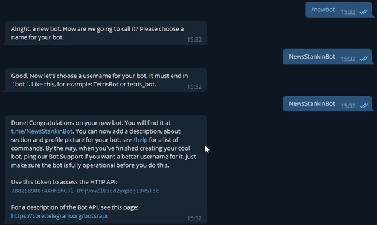
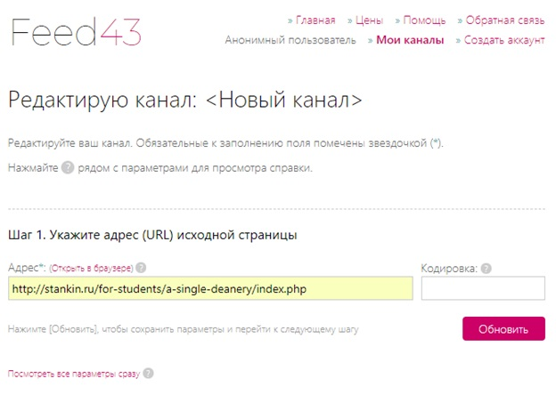
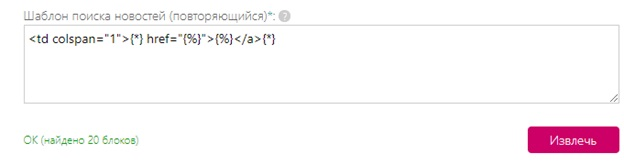
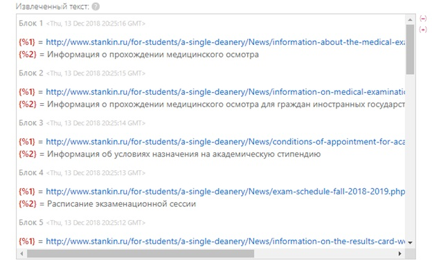
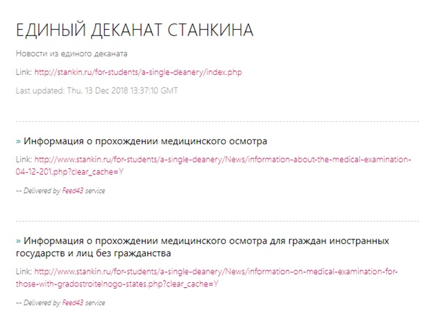
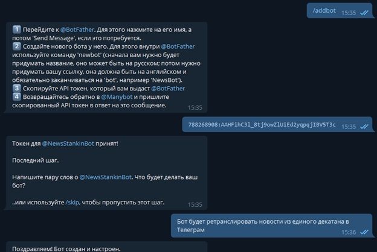
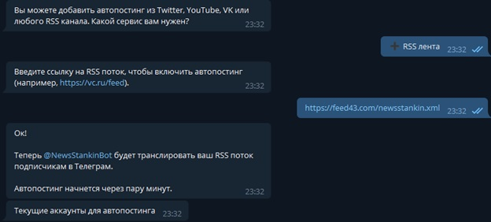
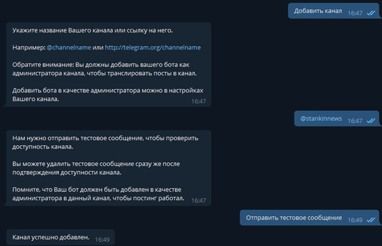

Страница-отчет Романова Никиты ИДМ 18-05
Целью Лабораторной работы №2 является создание простого веб-приложения. Было решено создать Telegram-бота, который в удобной форме
доставлял бы информацию из деканата университета до конечного пользователя (студентов).
Задачи, которые необходимо было решить, для достижения цели:
1. Зарегистрировать Telegram-бота с помощью @BotFather.
2. Адаптировать ленту новостей единого деканата под RSS-формат.
3. Настроить функционал созданного Telegram-бота при помощи @Manybot.
4. Подсоединить адаптированный вариант новостей университета к Telegram-боту.
5. Подключить бота к Telegram-каналу для удобного взаимодействия с ним студентов.
Ход выполнения:
1) Регистрация бота. На скриншоте показано взаимодействие с @BotFather (скриншот 1).
Скриншот 1
2. Для адаптирования ленты новостей единого деканата под RSS-формат был использован сервис Feed43.com (скриншот 2), который позволил проанализировать HTML-код сайта stankin.ru и преобразовать его (скриншот 3) под формат (скриншот 4), который бы легко воспринял Telegram-бот (скриншот 5).
Скриншот 2
Скриншот 3
Скриншот 4
Скриншот 5
3. Настройка функционала Telegram-бота (скриншот 6).
Скриншот 6
4. Подсоединение обновлённой ленты новостей к Telegram-боту (скриншот 7).
Скриншот 7
4. Добавление бота на Telegram-канал (скриншот 8).
Скриншот 8
